Povijest glagoljaštva
lenta vremena
863.
Autorom glagoljice smatra se sv. Konstantin Ćiril, Grk iz Soluna (826. ili
827. – 869.). Brojni su Solunjani dobro znali slavenski jezik zato što je u okolici njihova grada bila
naseljena nemala slavenska zajednica. Zbog svoje učenosti, mudrosti i zbog toga što je bio profesor
filozofije, Ćiril dobiva nadimak Filozof. Za potrebe misije među moravskim Slavenima (središnja Europa),
koju je 862. godine pokrenuo knez Rastislav, Ćiril je osmislio novo alfabetsko fonološko pismo glagoljicu s
najviše 38 znakova koristeći se elementima starijega sustavnog pisma i oblikovao književni jezik
starocrkvenoslavenski na temelju govora bugarsko-makedonskoga narječja 863.
Ćirilov je najbliži suradnik
bio njegov stariji brat Metod (oko 815. – 885.). Oni se jednim imenom nazivaju Svetom braćom ili Slavenskim
apostolima i prosvjetiteljima. Njihovim su djelovanjem postavljeni temelji slavenske pisane kulture i
uljudbe.
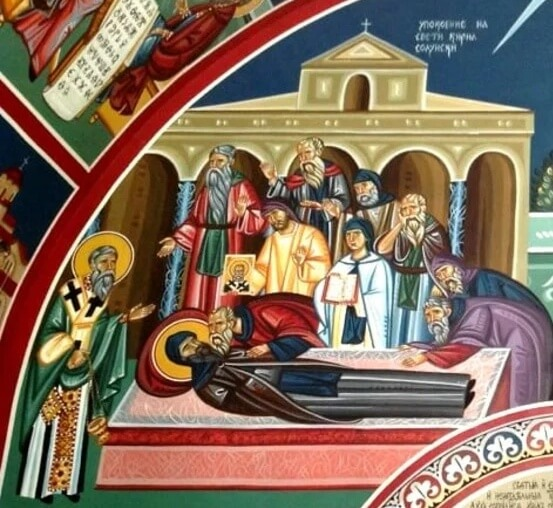
869.
14. veljače 869 umire Ćiril. Nakon Ćirilove smrti Metoda požrtvovno djeluje sljedećih šesnaest godina kako bi učinci misije trajno zaživjeli među slavenskim narodima.
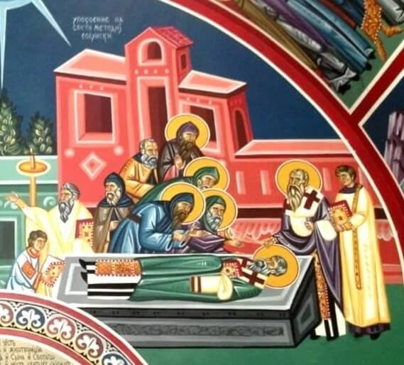
885.
6. travnja umire Metod. Važno je spomenuti da nije sačuvan nijedan spomenik iz vremena nastanka staroslavenskoga jezika, tj. iz druge polovice 9. stoljeća, jer su svi uništeni poslije Metodove smrti. Najstariji sačuvani spomenici prijepisi su iz 10. i 11. stoljeća.
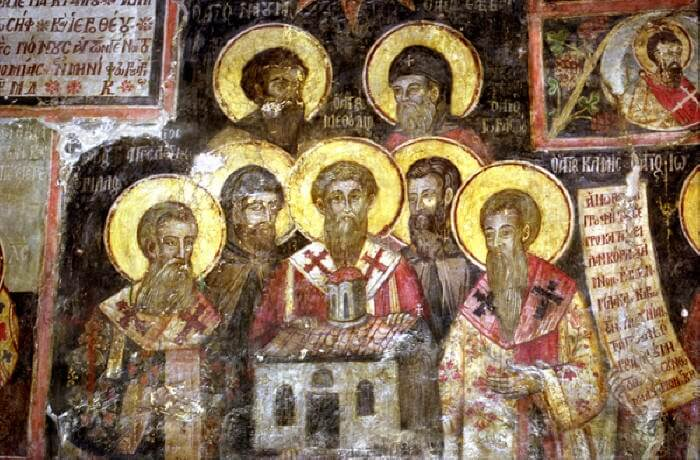
886.
Smrt Metoda bio je znak latinskomu kleru i protivnicima slavenske misije među Slavenima i protivnicima slavenskoga bogoslužja da obnove pritisak na slavenske misionare. Novoizabrani papa Stjepan V. pismom knezu Svatopluku zabranio je slavensko bogoslužje. Metodovi su učenici nakon toga početkom 886. zlostavljani, neki su i zarobljeni te protjerani. Večina njih je iz Moravske prešla u Bugarsku, a zarobljenici su bili prodavani u Veneciji te prešli na bizantski prostor, u Istru, na Kvarnerske otoke i u Dalmaciju. Time se u nepovoljnim okolnostima baština Svete braće proširila na prostoru Bugarske i Makedonije, kasnije među Hrvatima, Slovacima i Česima, a poslije i među druge slavenske narode.
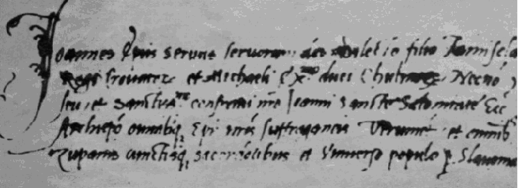
925.
Prve pouzdane vijesti o uporabi prvoga slavenskog književnog jezika i pisma
glagoljice kod Hrvata potječu iz 10. stoljeća, točnije iz godine 925., iz dvaju pisama pape Ivana X. U
jednom pismu papa opominje dalmatinske biskupe zbog služenja bogoslužja na slavenskom jeziku, a u drugom
prigovara prvome hrvatskome kralju Tomislavu i zahumskomu knezu Mihajlu Viševiću što to dopuštaju. Zaključci
splitskih crkvenih sabora u ranom srednjem vijeku također svjedoče o postojanju slavenskoga bogoslužja.
Ova pisma time su prva potvrda glagoljaštva u Hrvatskoj.
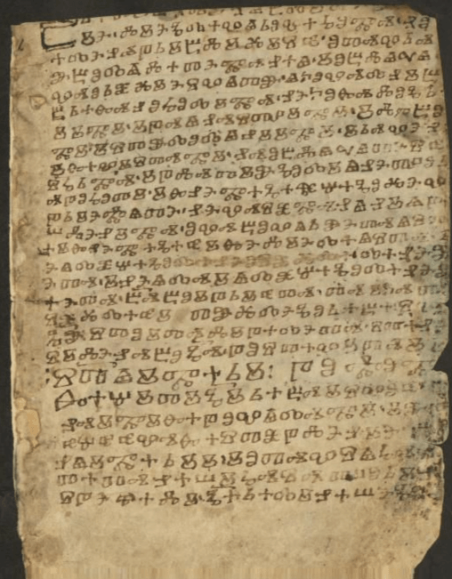
10. st., 11./12. st.
Kijevski listići, jedan od najstarijih očuvanih glagoljičnih zapisa te najstariji starocrkvenoslavenski liturgijski spomenik. Listići fragment su sakramentara sa sedam listova, nastalih najranije krajem 9. ili tijekom 10. st. na crkvenoslavenskome jeziku. Čuvaju se u Nacionalnoj knjižnici Ukrajine „V. I. Vernadski” u Kijevu. Prva stranica, dodana vjerojatno u 12. st., napisana je na hrvatskome, a ostatak na srednjoeuropskome prostoru te sadržava najstariju poznatu molitvu Blaženoj Djevici Mariji na tome jeziku.
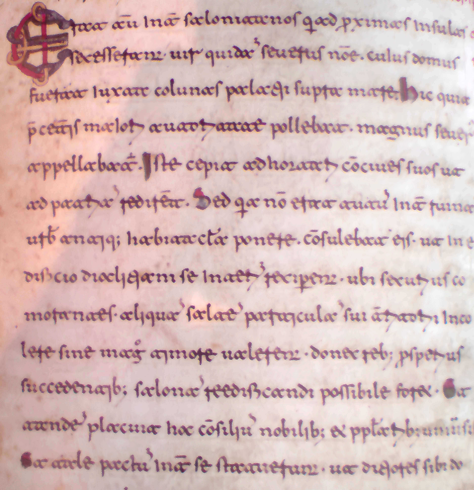
1060.
Splitski crkveni sabor iz 1060. godine nije ukinuo slavensku službu Božju niti uporabu glagoljice, ali je naredio da svećenici moraju znati i latinski jezik u govoru i pismu. O tome saboru doznajemo u dijelu Toma Arhiđakon Historia Salonitana sastavljena u 13. st.
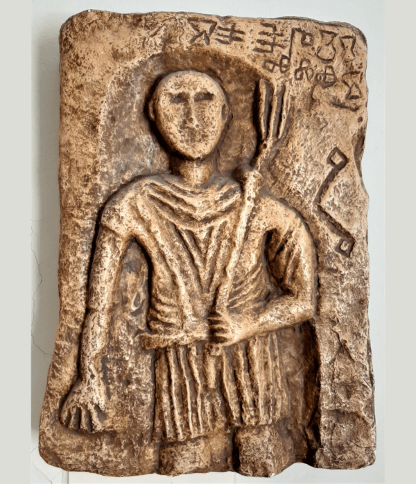
11. st.
Plominski natpis kameni je reljef iz 11. stoljeća na crkvi sv. Jurja Staroga u Plominu u Istri. Plominski natpis ubraja se u najstarije spomenike hrvatskoga jezika. Povjesničari umjetnosti nisu sigurni je li na njemu prikazan lik sv. Jurja ili ilirski bog Silvan. Natpis, koji je mlađi od zagonetnoga prikaza kršćanskoga svetca ili starobožačkoga lika, glasi se e pisъlъ s… ('ovo je pisao s...'). Taj se najstariji spomenik istarskoga glagoljaštva do danas sačuvao zahvaljujući tomu što je bio prekriven osinjacima. Zbog njih je ostao pošteđen od talijanaškoga uništavanja hrvatske materijalne kulturne baštine u prvoj polovici 20. stoljeća.
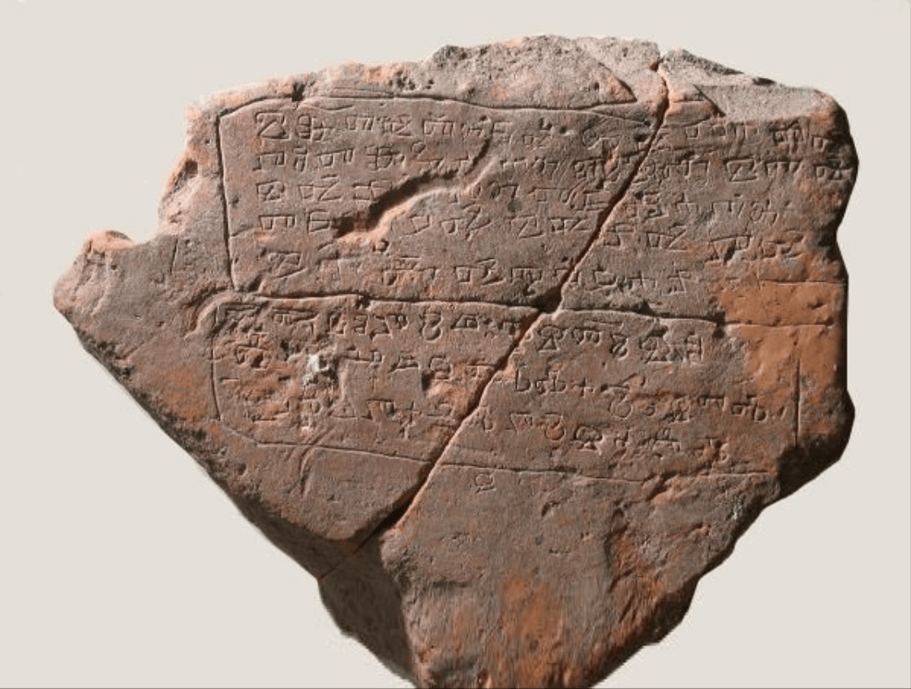
11. st.
Glagoljski natpis iz Župe Dubrovačke nalazi se na ulomku krovnoga crijepa antičkoga podrijetla koji je pronađen 2007. prilikom arheološkog istraživanja groblja kraj Crkve sv. Đurđa između Petrače i Buića u Župi Dubrovačkoj. Otkriveni se dio srednjovjekovnoga groblja datira između 10. i 12. stoljeća. Nakon čišćenja kamenca s crijepa otkrivena su 102 glagoljska slova (19 grafema, 25 riječi, 8 ili 9 redaka) koji se datiraju 11. stoljećem. Kao epigrafski spomenik najranijega glagoljskoga razdoblja, natpis iz Župe Dubrovačke po dužini je teksta odmah iza Baščanske ploče.
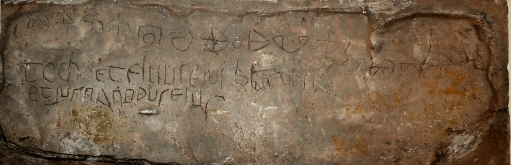
11. st.
Valunska ploča kamena je nadgrobna ploča iz 11. stoljeća iz Valuna na otoku Cresu s dvojezičnim natpisom – na hrvatskome oblom glagoljicom te na latinskome latinicom. Riječ je o grobnome natpisu triju naraštaja – bake Têhe, sina Bratohne i unuka June. Hrvatskoglagoljični tekst glasi: těha sinъ vъ(nu)kъ juna, a latinski Techa et filius eius Bratohna et Iunna nepus eius.
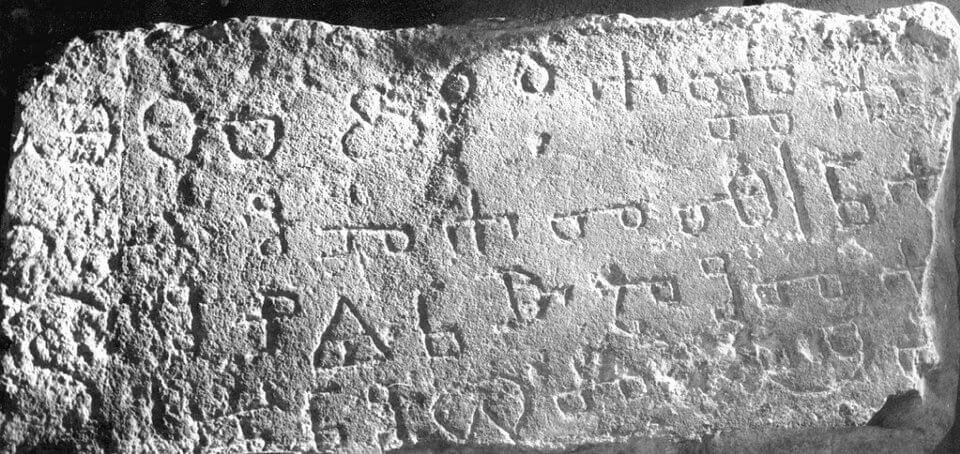
11. st.
Krčki natpis (11. st.) povezuje se sa Samostanom sv. Lovre na ulazu u Krk. Pisan je hrvatskim jezikom, oblom glagoljicom, no s pokušajem koordiniranja slova, u smjeru razvoja ustavne glagoljice.
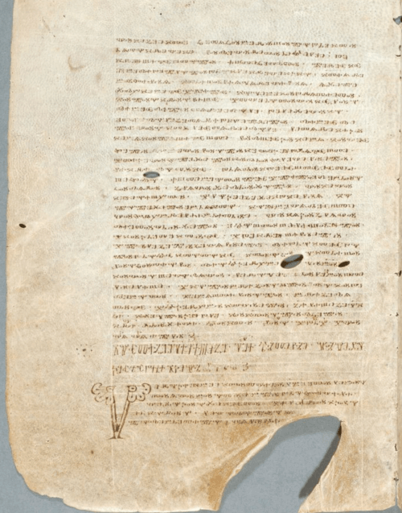
11./12. st.
Kločev glagoljaš (Glagolita Clozianus) ili Frankapanski kodeks veličine 27 × 20,5 cm, jedini je sačuvani rukopis tzv. staroslavenskoga kanona s hrvatskoga prostora. Bio je u posjedu Ivana VII. Frankapana († 1486.), posljednjega krčkog gospodara iz te velikaške kuće, koja je kodeks čuvala kao relikviju vjerujući da ga je napisao sveti Jeronim. Sačuvani dio sadržava homilijar. Danas se 12 listova čuva u Trentu, a jedan u Innsbrucku. Prvotna saznanja, izvornik i analize toga zbornika objavio je Jernej Kopitar 1836. godine.
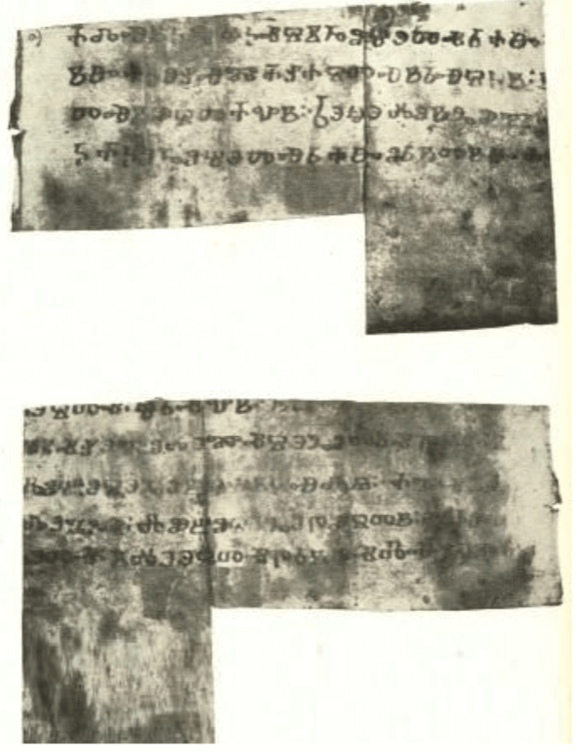
11./12. st.
Budimpeštanski odlomci, jedini hrvatskoglagoljični tekst koji još uvijek ima razliku između poluglasova jora i jera. Sačuvana su samo dva odlomka koja sadržavaju dio legende o Makariju. Čuvaju se u Nacionalnoj knjižnici Széchényi u Budimpešti.
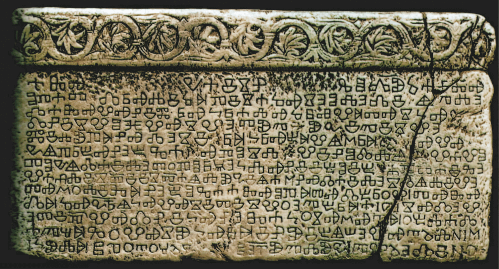
1100.
Bašćanska ploča je najpoznatiji i najopširniji hrvatskoglagoljični spomenik. Nastala je na otoku Krku, kolijevci glagoljaštva, oko 1100. godine. Nalazila se u crkvici sv. Lucije u Jurandvoru kraj Baške. Pisana je prijelaznim tipom glagoljice s oble na uglatu. Služila je kao lijevi plutej u crkvenoj pregradi. Natpis ima 13 redova, počinje invokacijom, a zatim slijedi zapis popa Držihe o tome da je kralj Zvonimir darovao ledinu crkvi sv. Lucije. Navode se i svjedoci toga darivanja. Nakon toga opat Dobrovit svjedoči kako je s devetoro braće zidao crkvu u vrijeme kneza Kosmata. Na ploči se prvi put na hrvatskome jeziku spominje ime kralja Zvonimira i hrvatskoga naroda. Danas se Bašćanska ploča čuva u atriju Hrvatske akademije znanosti i umjetnosti u Zagrebu.
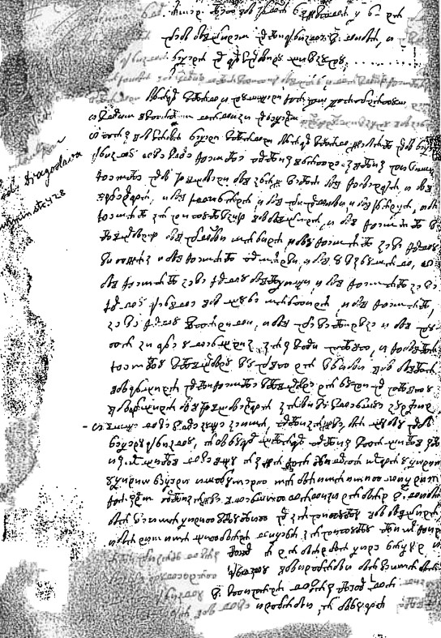
oko 1100.
Darovnica slavnoga Dragoslava najstarija je poznata glagoljična isprava, napisana 1. siječnja 1100. godine u Dobrinju na otoku Krku, na hrvatskome jeziku. Izvorni je tekst izgubljen, a sačuvan je jedino prijevod s latinskoga na hrvatski (na slici), notarski akt Petra Periša iz 1724. godine. Najbolje čitanje darovnice dao je Milan Mihaljević 2000. godine, znatno različit u odnosu na ranija čitanja (vidi rad).
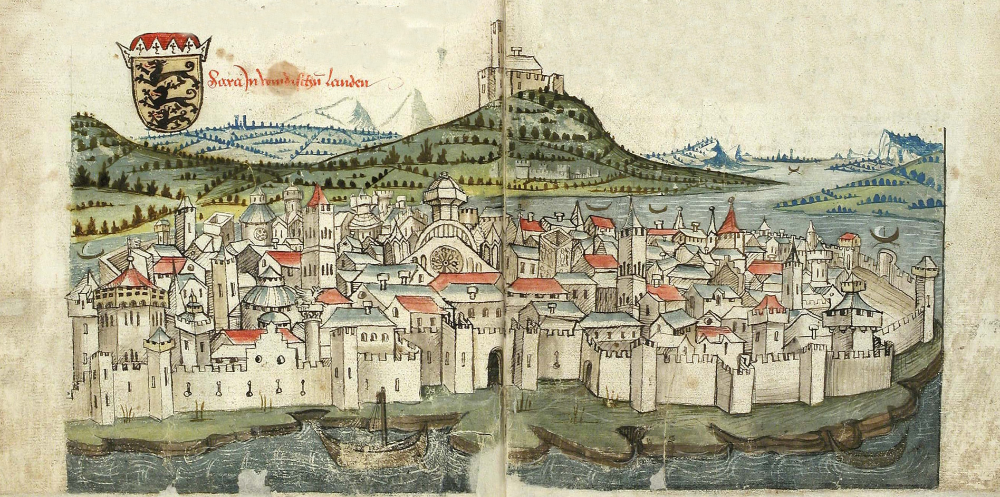
1177.
Godine 1177. papa Aleksandar III. posjetio je Zadar. Kardinal Beson iz Papine pratanje zabilježio je da su Zadrani Papu dočekali pjevanjem kantika i lauda na hrvatskom jeziku: "cum immensis laudibus et canticis altissime resonantibus in eorum sclavica lingua". Ovo je prvi poznati pisani spomen glagoljaškoga pjevanja u Hrvatskoj. Događaj potvrđuje da je glagoljaška liturgijska praksa bila čvrsto ukorijenjena u Dalmaciji već u 12. stoljeću.
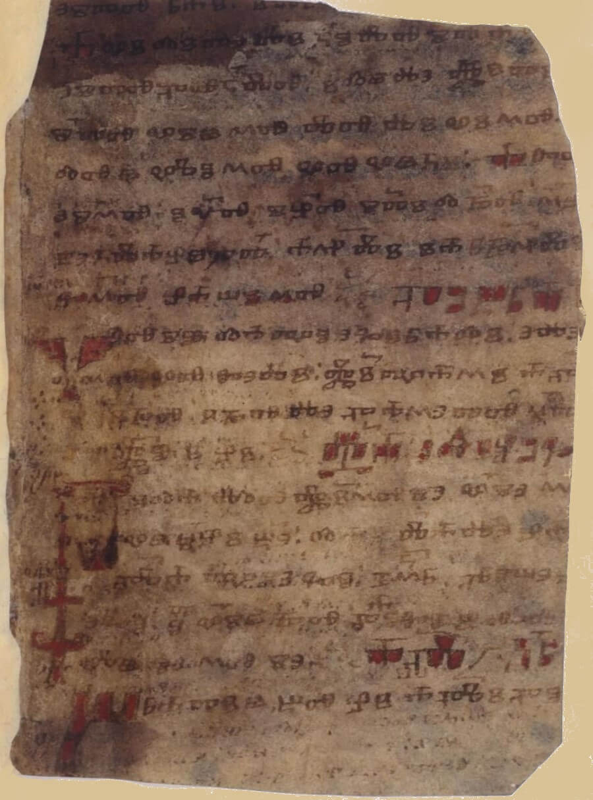
11./12. st.
Bečki listići je najstariji spomenik hrvatske liturgijske književnosti na hrvatskme crkvenoslavenskom jeziku i najstariji svjedok češko-hrvatskih kulturnih veza. Dva pergamentna lista ispisana formativnom glagoljicom potječu s kraja 11. se ili početka 12. stoljeća.
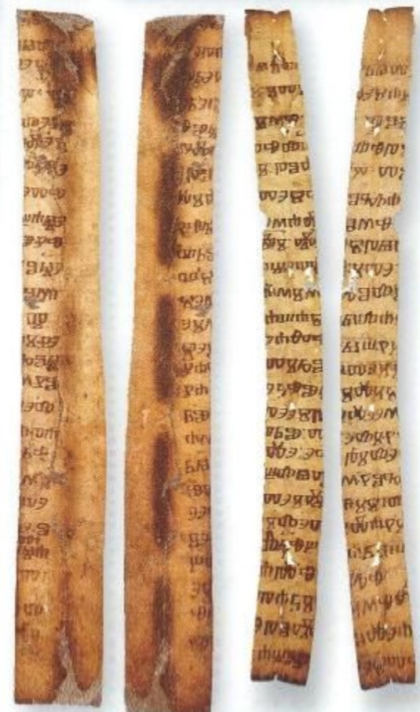
12. st.
Baščanski ostrišci glagoljični su fragmenti pronađeni u Baškoj na otoku Krku. Spadaju među najstarije sačuvane glagoljične tekstove iz početne faze hrvatskoga crkvenoslavenskog jezika, a sadržavaju odlomak Muke po Mateju. Vinko Premuda pronašao ih je u Baškoj i čuvao u svojoj kući. Nakon njegove smrti ostavština je prebačena u Hrvatsku akademiju znanosti i umjetnosti, no ostrišci su nestali. Godine 1997. pronađeni su u Hrvatskome državnom arhivu, pomiješani s ostavštinom Branimira Gušića.
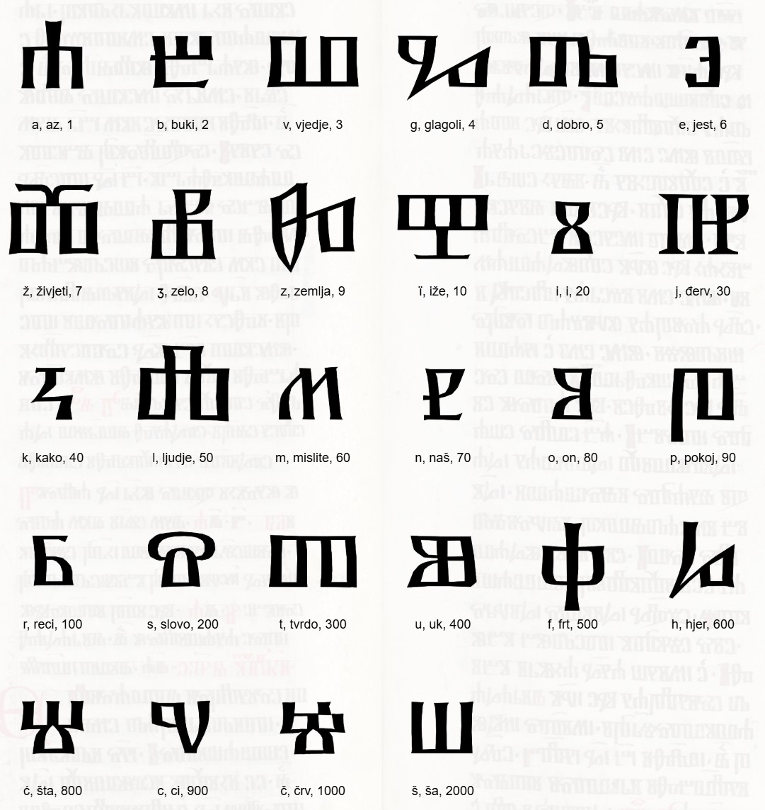
12./13. st.
Razvija se uglata stilizacija glagoljice, koja se razlikuje od prvobitne okrugle (oble) glagoljice, karakteristične po kružiću kao jednome od elemenata. Ta uglata inačica, koja je svojstvena isključivo hrvatskomu području, naziva se hrvatskom glagoljicom. Najprepoznatljivija je u svojemu ustavnom obliku, koji je najzastupljeniji u liturgijskim knjigama poput misala i brevijara.
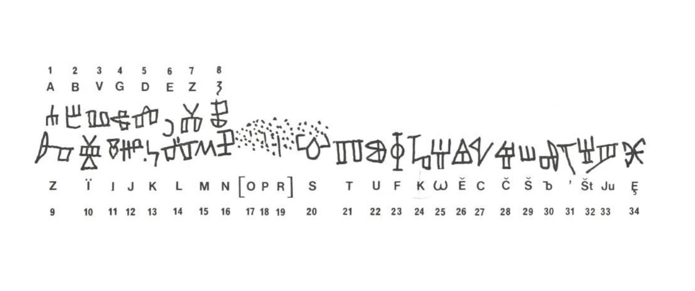
oko 1200.
Ročki glagoljični abecedarij uparan u posvetnome križu crkve sv. Antona opata u Roču u Istri. Azbučni je niz od 34 znaka iz prijelaznoga razdoblja kad se počela oblikovati hrvatska uglata glagoljica. Sam natpis ispod žbuke otkrio je Branko Fučić 1949. godine.
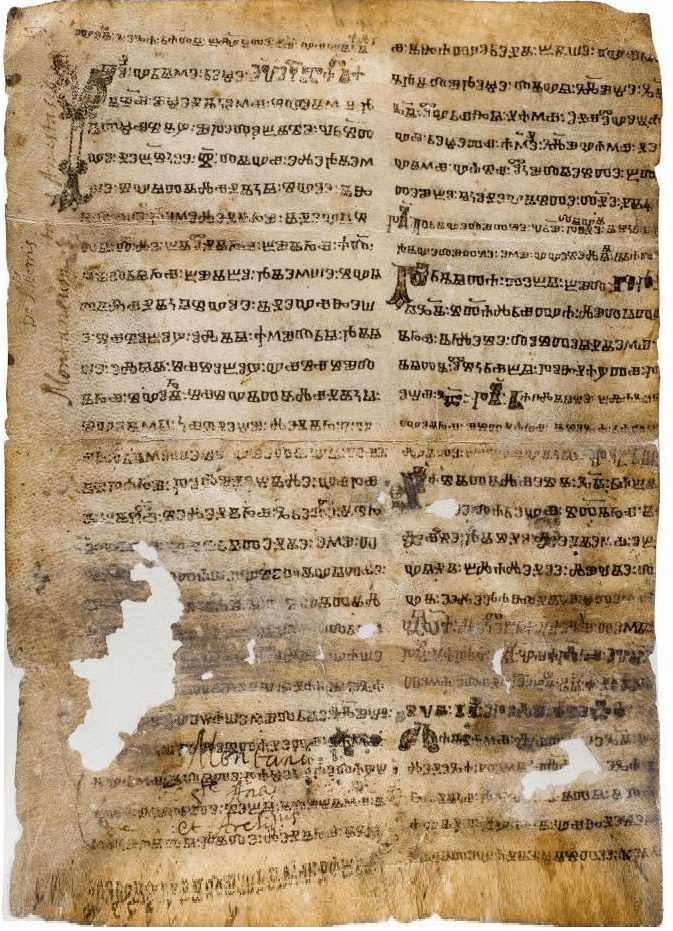
13. st.
Splitski fragment Misala je list pergamenta iz početka 13. stoljeća napisan glagoljicom na crkvenoslavenskome jeziku s elementima ikavske štokavštine. Pronašao ga je Vjekoslav Štefanić 1957. godine. Fragment sadržava misne obrasce za prosinac, a koristio se u uvezu kartulara samostana sv. Anastazije u Splitu. Po brojnim ikavskoštokavskim obilježjima zaključeno je da je napisan u jugozapadnoj Bosni u posljednjoj fazi razvoja glagoljaštva na tome području.
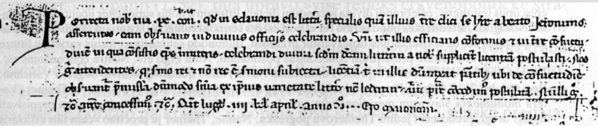
1248.
Otpis pape Inocenta IV. iz 1248. senjskomu biskupu Filipu sadržava papino dopuštenje da spomenuti biskup vrši bogoslužje na crkvenoslavenskome jeziku iz knjiga pisanih glagoljicom. Njegova je važnost u tome da po prvi put jedan katolički biskup dobiva dopuštenje da služi misu na nelatinskome jeziku. Pismo je stoga jasan i izravan dokaz prihvaćanja glagoljice i slavenskoga bogoslužja u hrvatskim krajevima. Na taj je način postavljen temelj za ulazno razdoblje hrvatske glagoljične kulture u 14. i 15. st. Pismo se danas čuva u Tajnome vatikanskom arhivu.
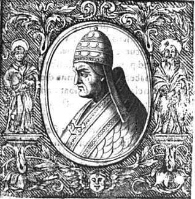
1252.
Odobrava se korištenje staroslavenskoga jezikom i glagoljice u bogoslužju bendeiktincima u Samostanu sv. Nikole u Omišlju.
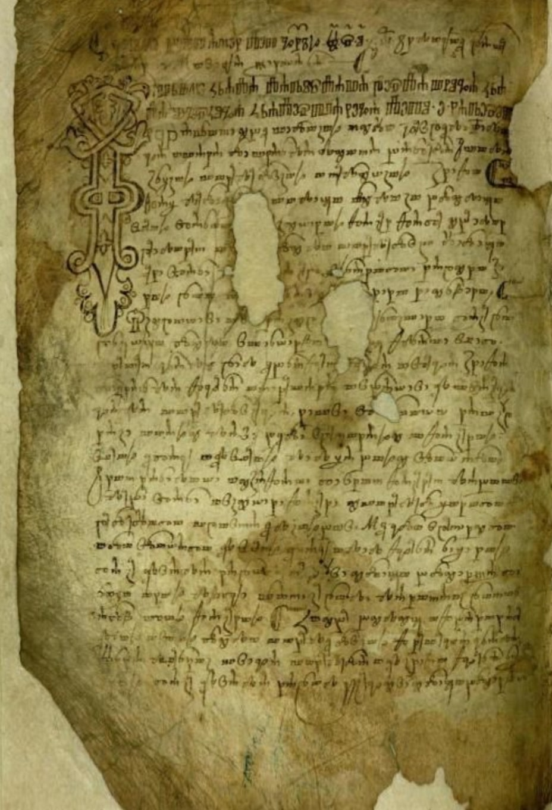
1288.
Vinodolski zakonik, najstariji cjelovito sačuvan dokument običajnoga prava, vjerojatno stariji od svih sličnih dokumenata na slavenskim jezicima osim Ruske pravde. Pisan glagoljicom na hrvatskome jeziku, u tome se pravnom tekstu od 77 članaka uređuju odnosi između slobodne općine Vinodol (Novi, Ledenice, Bribir, Grižane, Drivenik, Hreljin, Bakar, Trsat, Grobnik) i knezova Krčkih. Zapis je na 14 pergamentnih listova veličine 24,3 × 16,5 cm. Zakonik se čuva u Nacionalnoj i sveučilišnoj knjižnici u Zagrebu.
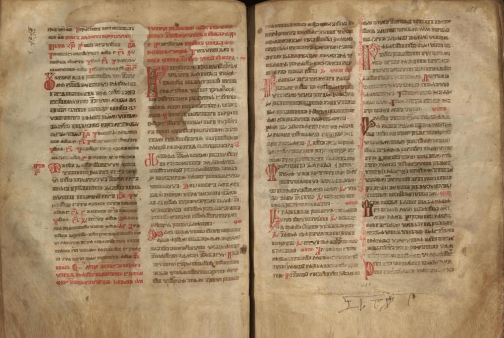
13./14. st.
I. vrbnički brevijar je najstariji očuvani hrvatskoglagoljski brevijar sastoji se od 259 pergamentnih listova. Stariji dio, 1–160 i 191–240, pisan je na prijelazu iz 13. u 14. st. Druga dva dijela, 161–190 i 241–259 lista, pisala su najvjerojatnije druga dva pisara oko sto godina kasnije. Brevijar je posebno važan za proučavannje biblijskih tekstova. Kodeks je vjerojatno pisan u Vrbniku, o čemu svjedoče naknadni zapisi s početka 15. st., kao i lokalna obilježja kao što su zamjenica če, refleks poluglasa kao e, čuvanje prefiksa vi itd.
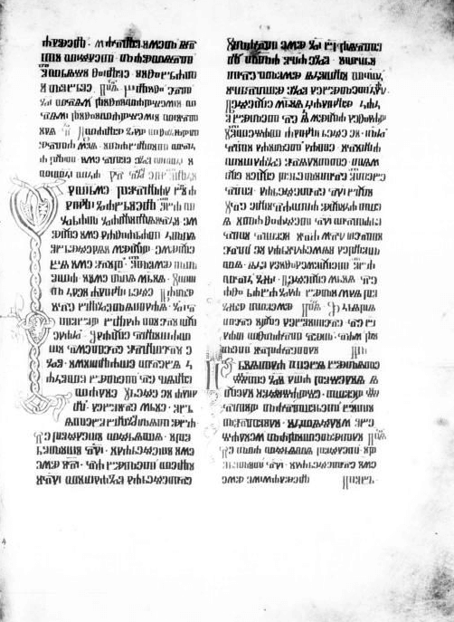
14. st.
Vatikanski misal Illirico IV smatra se najstarijim hrvatskoglagoljskim misalom (koji nije datiran), a njegov kanon najstariji sačuvanim tekstom slavenskoga prijevoda kanona uopće. Njegovi tekstovi evanđelja čuvaju značajke izvornoga, ćirilometodskoga prijevoda. Velika se starina očituje osobito u leksikonu. U novije vrijeme postoje i drukčija mišljenja o vremenu postanka toga misala koja njegovo pisanje smještaju u durugu polovicu 14. st. Pisan je najvjerojatnije u Omišlju na otoku Krku.
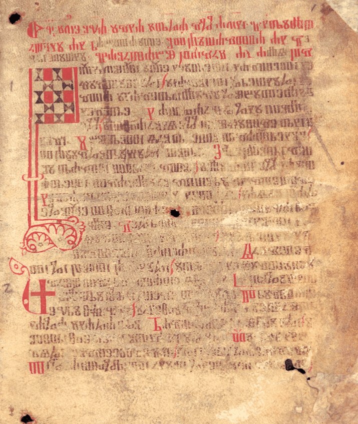
1359.
Lobkovicov psaltir iz 1359. najstarija je izrijekom datirana hrvatska glagoljična knjiga. Danas se čuva u Pragu. Napisao ju je senjski žakan Kirin. Sastoji se od 160 listova. Nazvana je po posljednim vlasnicima iz obitelji Lobkovic i po tome što je njegov najvažniji dio psaltir. U kolofonu na kraju rukopisa očuvala se bilješka o pisaru, žaknu (đakonu) Kirinu i godinu pisanja 1359. vjerojatno u crkvi sv. Kuzme i Damjna u Senju. Rukopis je malo upotrebljivan i dobro očuvan. Psaltir je potpun, ujedno i najstariji hrvatskoglagoljski tekst psaltira.
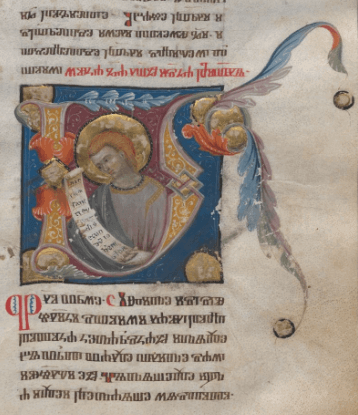
1368.
Misal kneza Novaka (1368.) rukopisna je glagoljska knjiga koju je ispisao knez Novak Disislavić iz ličke Ostrovice, dvorski vitez hrvatsko-ugarskoga kralja Ludovika I. Anžuvinca. Novakov se misal smatra najstarijim datiranim glagoljičnim misalom (Vatikanski misal Illirico IV je stariji, ali nema dataciju) te drugom najljepšom hrvatskoglagoljskom knjigom nakon Misala Hrvoja Vukčića Hrvatinića
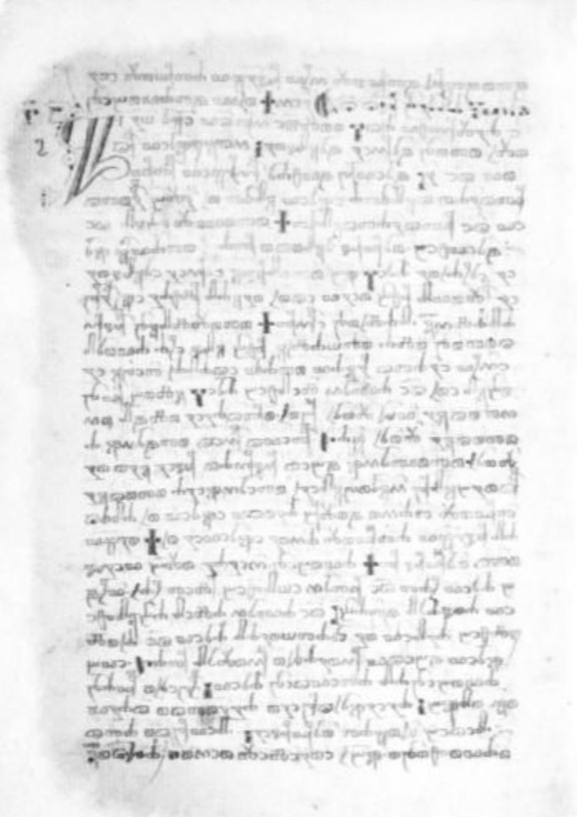
14. st.
U drugoj polovici 14. st. razvijaju se poluustav i kurziv koji se dijeli na dva tipa – knjiški kurziv i kancelarijski kurziv. Knjiškim kurzivom do sredine 16. st. obično su pisani kodeksi poučnoga ili književnoga sadržaja, dok su kancelarijskim kurzivom pisani kancelarijski i notarski akti te razni registri. Tipični su primjeri lijepoga i čitljivoga knjiškog kurziva Petrisov zbornik (na slici) i Žgombićev zbornik, dok je primjer kancelarijskoga kurziva prisutan u tisućama notarskih akata, nastajalih od 15. do 19. st. u javnih bilježnika hrvatskoga jezika i glagoljičnoga pisma u Istri te na otocima Cresu, Lošinju i Krku.
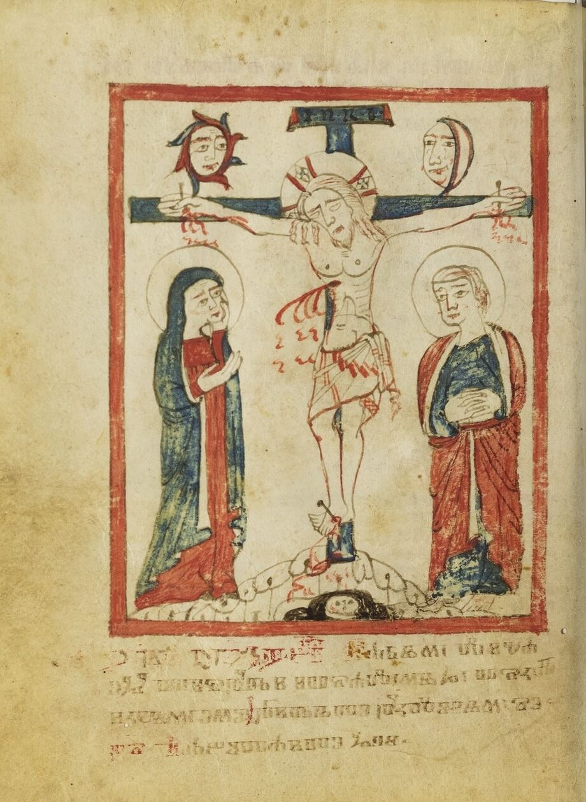
1375.
Pariškom zborniku Slave 73 je najstariji hrvatskoglagoljski zbornik. U zborniku rukopisu koji se umnogome razlikuje od drugih hrvatskoglagoljskih izvora, jer između ostalog sadrži rijedak primjer glagoljaškog liber horarum i predstavnik je onih liturgijskih tekstova koji su općenito nestali iz uporabe nakon franjevačke reforme. Intenzivnijim istraživanjem ovoga zbornika i utvrđivanjem izvora i predložaka na temelju kojih je kodeks sastavljen, zasigurno će se proširiti spoznaje o tragovima benediktinske glagoljske baštine u hrvatskoj kulturi.
1390.
Poljski kralj Vladislav II. Jagelović zove glagoljaše iz samostana Emaus kraj Praga u okolicu Krakova gdje im je podigao samostan sv. Križa u kojemu se glagoljica održala sve do potkraj 15. st.
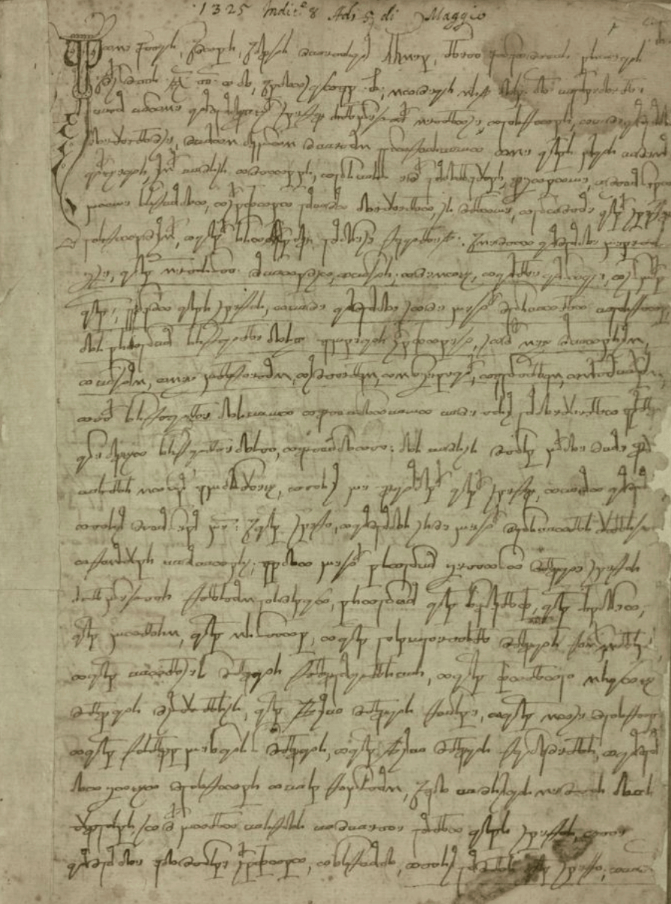
1395.
Istarski razvod, hrvatskoglagoljični pravni
spomenik, nastao oko 1395. kojim se uređuju granice te reguliraju posjedi i odnosi između istarskih općina
te njihovih feudalnih gospodara Habsburgovaca, akvilejskoga patrijarha i Mlečana. Pisan je glagoljicom na
hrvatskome jeziku na temelju priloženih dokumenata od 1275. do 1395. godine. Sačuvan je u više potvrda kao
notarski akt iz 16. st. Spomenik svjedoči o visokome pravnom standardu u graničnome području duž cijele
Istre potvrđujući ravnopravan položaj hrvatskoga jezika s latinskim i njemačkim u javnome bilježništvu na
europskoj razini.
Izvornik (original) nije sačuvan. Na hrvatskome jeziku spomenik je sačuvan samo u dva
glagoljska prijepisa:
- prijepis Levca Križanića iz 1546. (koji je nastao s prijepisa Jakova Križanića, 1502., na slici)
- Momjanski prijepis iz 16. st.
Taj istaknuti dokument istarske i hrvatske društvene povijesti na latinici prvi je objavio otac domovine Ante Starčević 1852. godine.
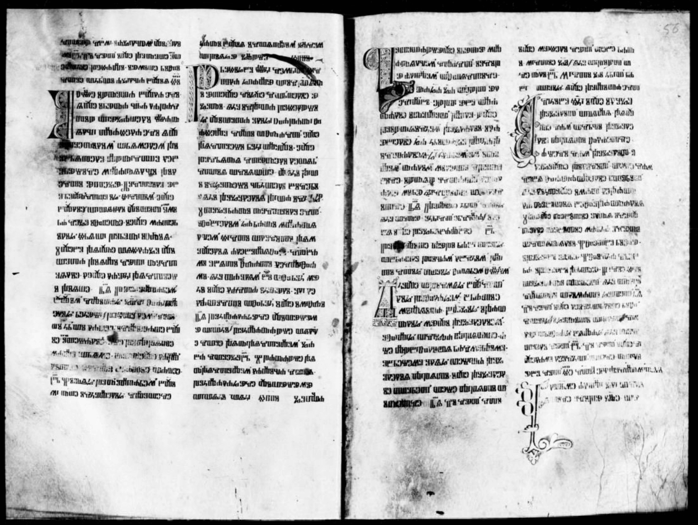
1396.
Brevijar Vida Omišljanina ispisao je pisar Vid iz Omišlja po narudžbi crkava sv. Bartolomeja i sv. Antona u Roču (Istra). Danas se ta rukopisna knjiga nalazi u Austrijskoj nacionalnoj knjižnici u Beču pod signaturom Cod. slav. 3. Izvorno je riječ o u kožu uvezanu kodeks koji sadržava 468 listova pergamene. Prema računici Branka Fučića za izradu je te pergamene bilo potrebno stado od 117 ovaca. Knjiga teži oko 8,5 kilograma te je najveća i najteža knjiga iz zlatnoga razdoblja hrvatskoga glagoljaštva (14. i 15. stoljeće).
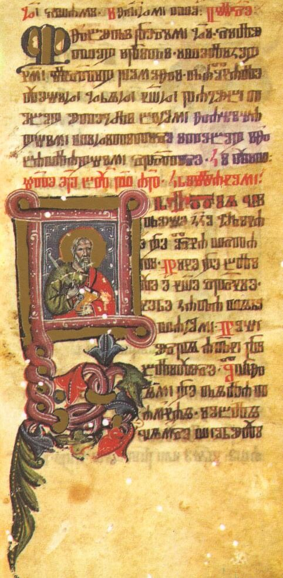
1403./1404.
Hrvojev misal nastao početkom 15. st. (oko 1404.) je na glasu kao najljepša i najluksuznije ukrašena hrvatskoglagoljična knjiga. Po ljepoti je odmah do nje Misal kneza Novaka, poznat po tomu što sadržava najviše zlatnih ukrasa i činjenici da je (vjerojatno) glavni predložak za izradu prve hrvatske tiskane knjige – Misala po zakonu rimskoga dvora iz 1483. godine.
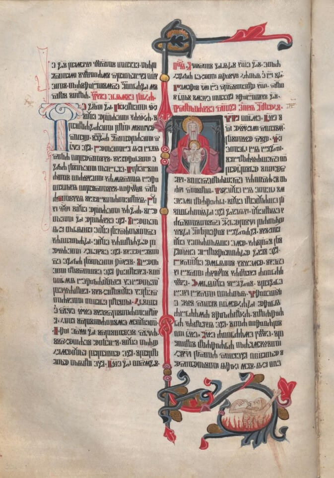
15. st.
Ročki misal je glagoljski misal pisan uglatom glagoljicom. Sadrži 232 lista pergamenta koji sadrže bogato iluminirane slike i inicijale. Autorstvo misala potpisuje Bartol Krbavac koji je značajan glagoljski pisac i vrstan iluminator. Izuzima se 13 listova koji su djelo drugoga pisca, ali iz istoga skriptorija. Ročki misal dobio je ime po Roču gdje je bio u uporabi do 1593. Značajan je filološki, kulturološki, povijesni i umjetnički spomenik hrvatskoga glagoljaštva.
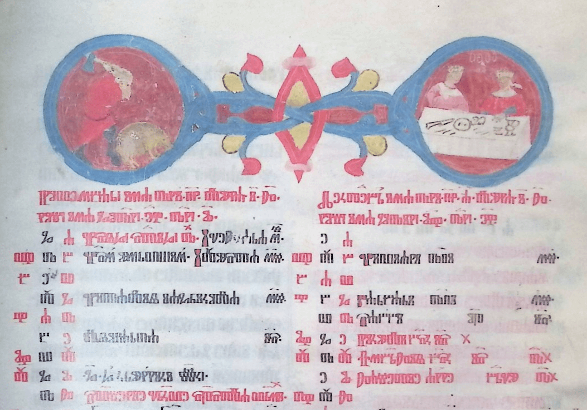
15. st.
I. ljubljanski (beramski) misal kodeks je od 245 pegamentnih listova. Vrlo lijepo i dobar očuvan rukopis prepisao je također Bartol Krbavac, a on se može zvat i beramski jer je rano bio u uporabi. To se može doznati iz kalendara u kojem je crvenom bojom označen blagdan svetog Martina, biskupa i ispovjednika, a njemu je posvećena crkva u Bermu. Kalendar je u ovom misalu zanimljiv i po tzv. alegorijama mjeseci, tj. po sličicama koje prikazuju posao tipičan za određeni mjesec.
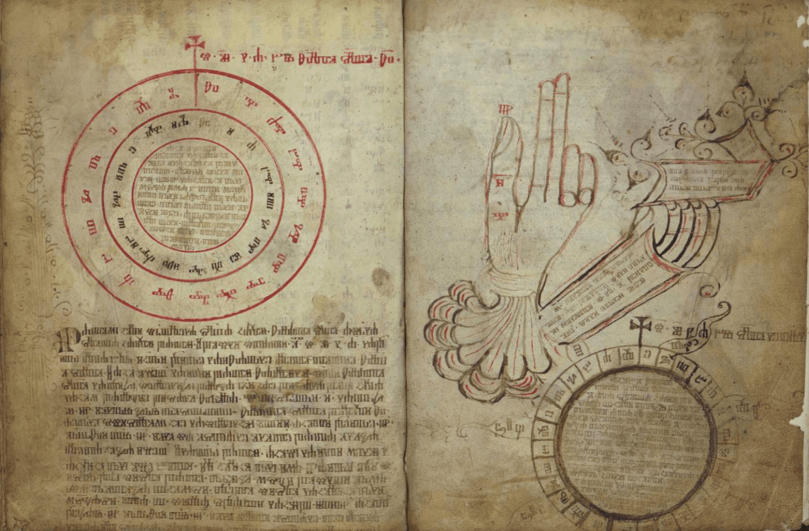
1460.
Brevijar popa Mavra je rukopis od 417 listova pisan ustavnom glagoljicom dvostupačno s po 30 redaka i urušen inicijalima crvene i zelene boje s elementima pletera. Brevijar je napisao žakan Blaž Baromić za vrbničkog popa Mavra, a dovršio pop Jure iz Baške. To je bio putni brevijar koji je vrbnički pop Mavar nosio sa sobom u Konavle, o čemu svjedoče zabilješke u rukopisu. Sanktoral ovog brevijara ima dvije vlastite službe koje obilježje nacionalnih oficija: službu u čast solunskoj braći koja njihovo rođenje smješta u Solin i službu u čast sv. Iliji. Kodeks je bio u privatnom vlasništvu obitelji Pezzoli u Rimu sve do 1981. kad je otkupljen.
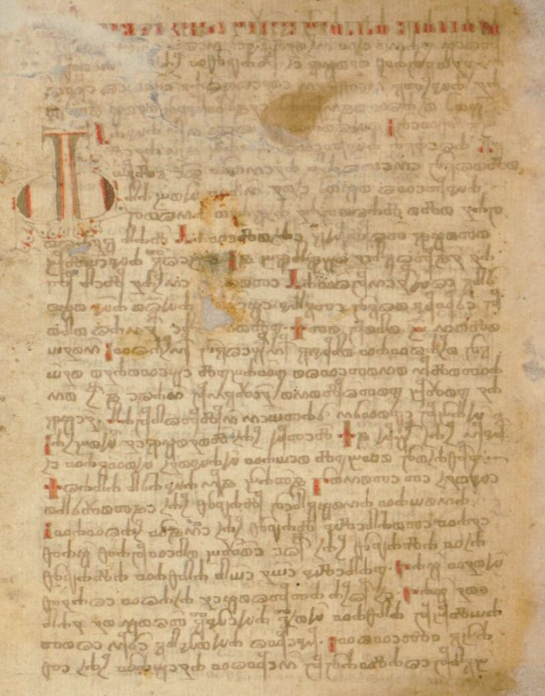
1468.
Petrisov zbornik je sa svojih 350 listova najopsežniji, a po sadržaju među zanimljivijima hrvatskoglagoljskim srednjovjekovnim rukopisnim zbornicima i najvažniji izvor za istraživanje hrvatske srednjovjekovne književnosti. U njem se nalaze članci iz apokrifne književnosti, dijelovi srednjovjekovnih romana, enciklopedijski tekstovi, traktati, recepti i dr. U njegovu jeziku miješaju se čakavština, kajkavština i staroslavenski jezik. Ne zna se je li pisan u Istri ili na ozaljskome području.
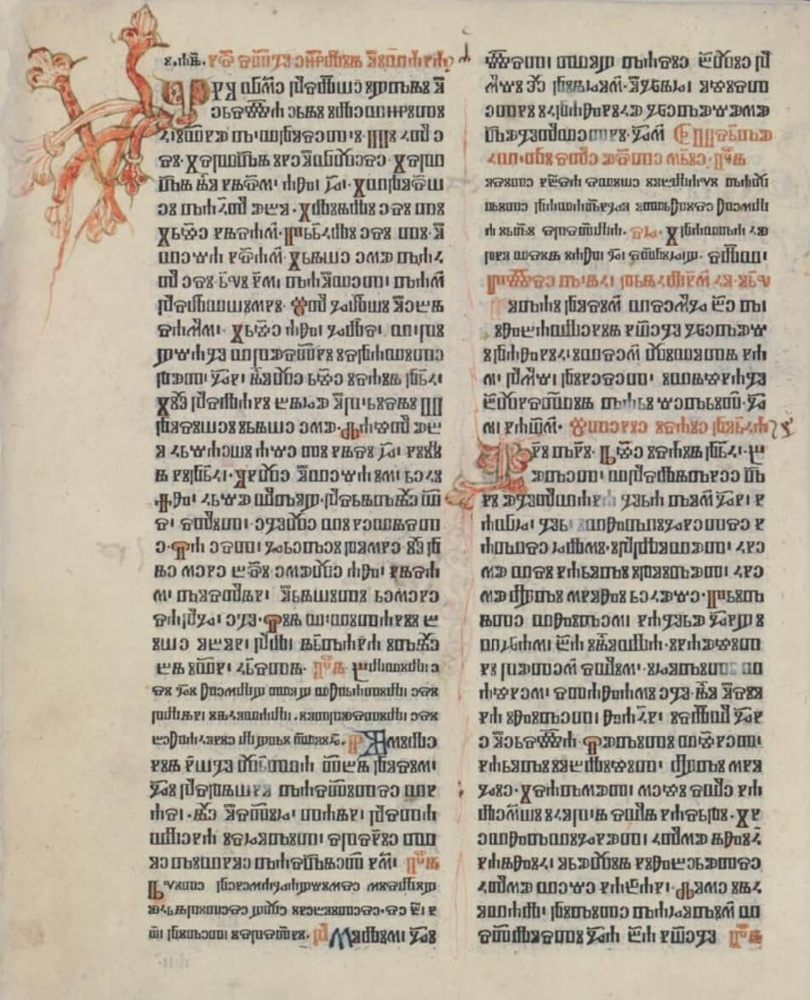
1483.
S glagoljaštvom započinje pisana, tj. zabilježena povijest hrvatskoga
jezika, povijest hrvatske knjige i uopće povijest hrvatske pisane kulture. O snazi i dosegu te baštine
govori činjenica da s glagoljašima započinje povijest hrvatskoga tiska i da je glavnina hrvatskih inkunabula
tiskana upravo na glagoljici. Inkunabule su knjige tiskane na samim početcima tiska u Europi, od 1455. do
1500. godine. Samo 28 godina nakon Gutenbergove Biblije i devet godina nakon prvotiska latinskoga misala
otisnuta je prva hrvatska tiskana knjiga – glagoljični Misal po zakonu rimskoga
dvora, čije je tiskanje dovršeno 22. veljače 1483. godine.
Od ukupno devet poznatih
hrvatskih inkunabula šest ih je otisnuto glagoljicom. Uz Misal iz 1483. to su Brevijar
po zakonu rimskoga dvora (1491.), Baromićev brevijar (1493.), Senjski misal (1494.)
i Spovid općena (1496.). Za Ispovid (1492.) znamo da je otisnuta, ali se do danas nije
našao nijedan njezin primjerak.
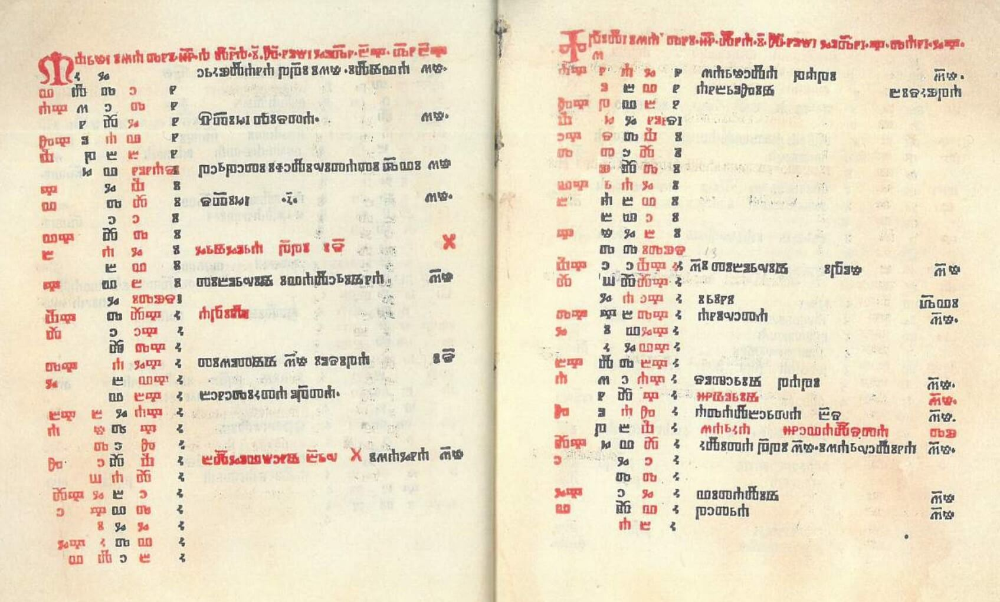
1491.
Hrvatskoglagoljski tiskani brevijar iz 1491. godine u prvom dijelu temporala (do početka korizme) slaže se s najstarijom glagoljskom tradicijom, sačuvanom npr. u I. vrbničkom brevijaru. U ostalom dijelu godine slijedi jednu mlađu tradiciju, ali različitu od zadarsko-krbavskih brevijara. U sanktoralu se slaže s onim istarskim brevijarima koji nemaju kult sv. Ćirila i Metodija ni jače istaknutih franjevačkih svetkovina. Za jezik brevijara iz 1491. karakteristična je češća upotreba zamjenice če mjesto čьto. Vjerojatno je dakle i ovaj prvotisak djelo istarskih glagoljaša, iako po svojim tehničkim osobinama zaostaje za prvotiskom misala iz 1483.
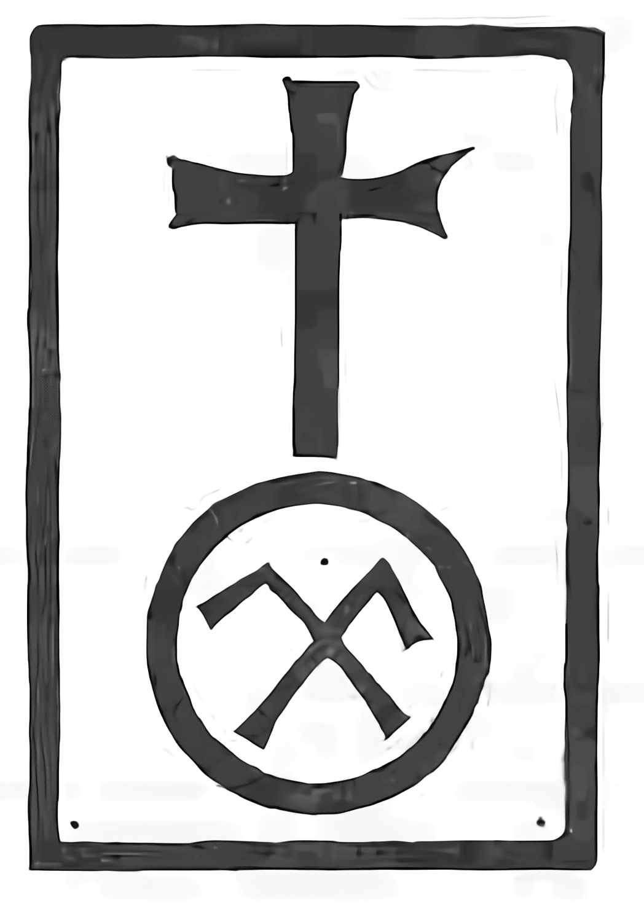
1494.
U Senju od 1494. do 1508. djelovala je glagoljična tiskara, koju je utemeljio Krčanin i senjski kanonik Blaž Baromić sa suradnicima. Danas je poznato sedam naslova izdanih u toj tiskari: Senjski misal (1494.), Spovid općena (1496.), Naručnik plebanušev (1507.), Mirakuli slavne deve Marije (1507./1508.), Meštrija od dobra umrtija s ritualom (1507./1508.), Transit sv. Jerolima (1508.) i Korizmenjak (1508.).
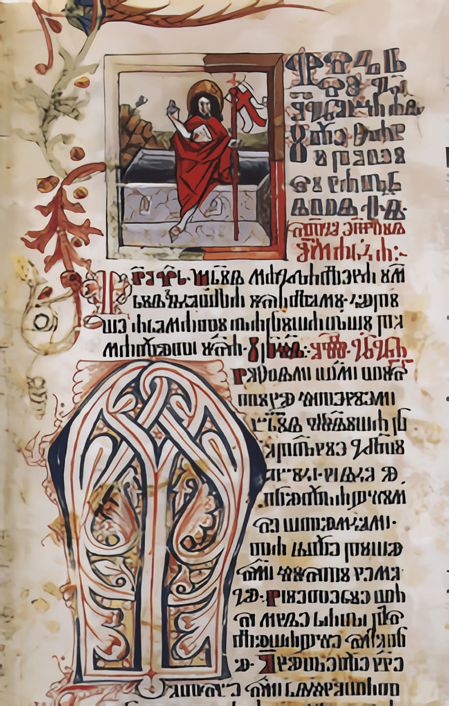
1495.
Drugi Novljanski brevijar poznat još kao Zapis popa Martinca sadrži opis o porazu hrvatske plemičke vojske od Osmanlija na Krbavskome polju 1493.
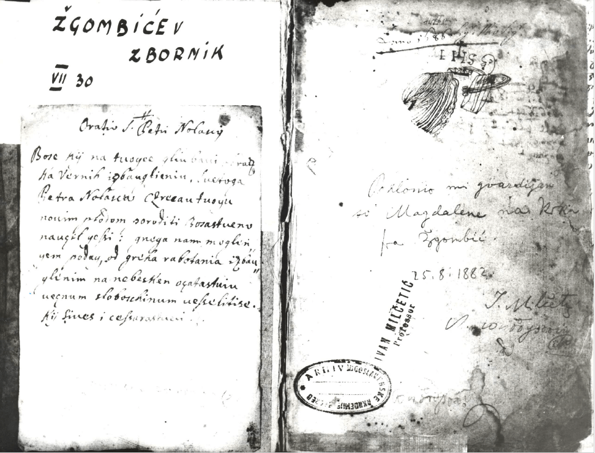
16. st
Hrvatskoglagoljski Žgombićev zbornik iz 16. stoljeća smatra se
jednom od najvažnijih hrvatskih zbirki srednjovjekovnih književnih tekstova Sadrži dvadesetak tekstova, od
kojih dio potječe iz grčko-bizantsko-crkvenoslavenskih matica, a dio iz zapadnoeuropskih književnih izvora.
Ta dvojnost izvora odakle je crpljena građa tipična je za cjelokupan korpus hrvatske srednjovjekovne
književnosti.
Kodeks je napisan na papiru i ima 125 listova, a sastoji se od triju dijelova različite
starine. Najstariji i najveći dio s više od stotinu listova – od 24 do 125 – napisan je između 1520. i 1530.
godine. Drugi dio, na listovima od 11 do 23, nastao je prema Štefaniću najkasnije oko 1540. godine. Treći,
najmlađi dio, potječe iz vremena oko 1582. godine. Obuhvaća deset listova koji su uvezani na početku knjige.
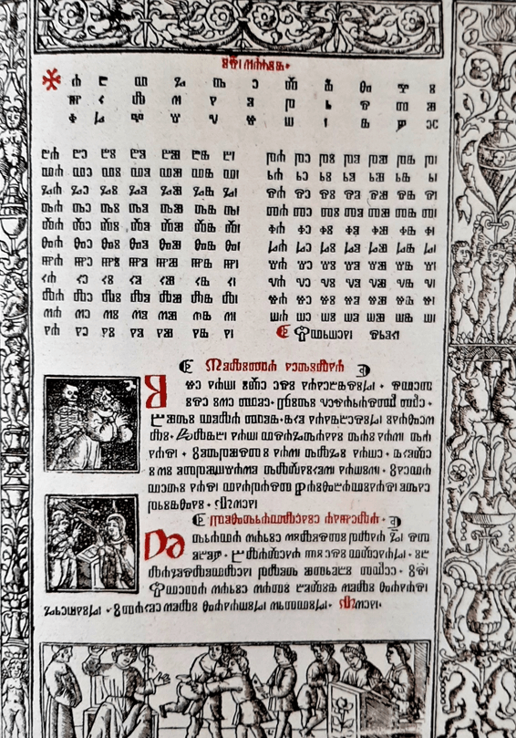
1527.
Prva hrvatskoglagoljska početnica otisnuta u Veneciji 1527. je najstarija hrvatska glagoljska početnica. Tiskana je u tiskari Andree Torresanija.
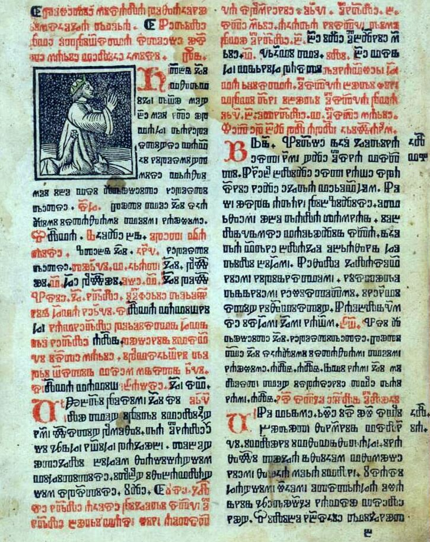
1529.
Misal Pavla Modrušanina otisnut je u Veneciji 1529. Smatra se jednim od najljepših hrvatskih glagoljičnih misala. Modrušanin je u tiskani kalendar dodao stihove o godišnjim dobima i tako ostvario svoj jedini pjesnički pokušaj. Zanimljivo je da se upravo uz 22. veljače nalazi zapis kojim se najavljuje početak proljeća.
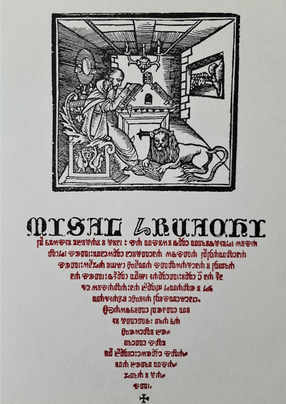
1531.
Modruški bisku Šimun Kožičić Benja tiskao Misal hruacki u Rijeci. Smatra se najopsežnijim i najljepšim Kožičevim dijelom. Knjiga je tiskana na 8 nepaginiranih i 248 paginiranih listova te sadrži mnogo glagoljskih inicijala i gotičkih ilustracija od kojih neke sadrže antropomorfne likove.
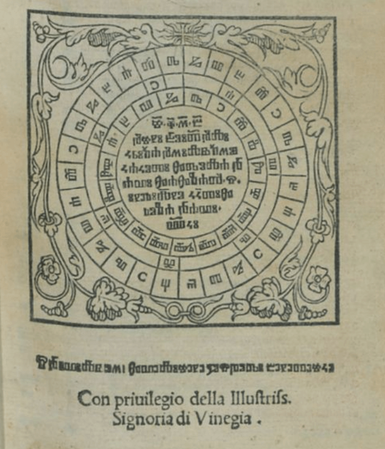
1561.
Knjiga je s kojom završava najstarije, najbogatije i najutjecajnije razdoblje hrvatskoga glagoljičnog tiskarstva Brozićev brevijar. Tiskana je 1561. u Veneciji, a pripremio ju je Nikola Brozić iz Omišlja na Krku. Riječ je zapravo o novome izdanju Baromićeva brevijara iz 1493. godine, prve hrvatskoglagoljične knjige kojoj je u kolofonu navedeno kad ju je, gdje i tko tiskao. Brozićevo je izdanje dopunjeno pojedinim službama čiji je tekst djelomice pohrvaćen.
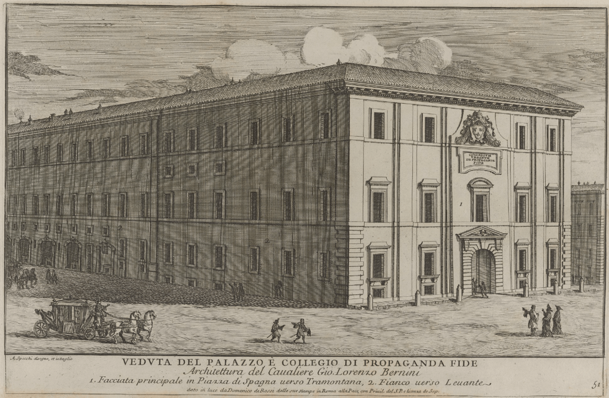
16. st.
U 17. stoljeću Kongregacija za širenje vjere u Rimu (Propaganda
Fide) naredila je da se hrvatske glagoljske knjige prilagode ruskoj redakciji jezika, kakvu su
koristili i ukrajinski grkokatolici, kako bi se pravoslavni Slaveni lakše približili Katoličkoj Crkvi.
Zbog toga dolazi do rusifikacije hrvatskih tekstova i promjena u glagoljskoj grafiji. Liturgijske knjige sve
više dobivaju obilježja istočnoslavenskog jezika, dok nabožna i neliturgijska literatura ostaje bliža
domaćem govoru.
Istodobno se pojavljuju pokušaji da se stvori jedinstveni slavenski književni jezik razumljiv svim
Slavenima, no sve više raste razlika između liturgijskog jezika i svakodnevnog govora.
Unatoč kontroli Propagande Fide, glagoljica se i dalje koristi izvan Rima, primjerice u župnim
zapisima, bratovštinama i lokalnim rukopisima.
Budući da su rusificirani tekstovi djelovali strano i teško razumljivo, mnogi glagoljaši su ih napustili i
počeli koristiti latinične knjige na narodnom jeziku, poznate kao šćavet.
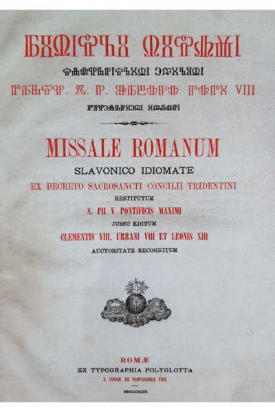
1631.
Levakovićev misal iz 1631. godine, poznat i kao Misal rimski va ezik slavenskij ili Missale Romanum Slavonico idiomate, značajno je djelo hrvatske glagoljaške baštine. Rafael Levaković, franjevac iz Jastrebarskog, priredio ga je u Rimu pod okriljem Kongregacije za širenje vjere (Propaganda Fide), u skladu s odlukama Tridentskoga koncila. Misal je tiskan glagoljicom i predstavljao je pokušaj standardizacije liturgijskih knjiga na hrvatskom crkvenoslavenskom jeziku. Levaković je preveo nove dijelove s latinskog, dok je postojeće tekstove preuzeo iz starijih glagoljskih misala. Uveo je i gregorijansku notaciju, što je bilo novo u glagoljaškoj tradiciji. Unatoč važnosti, misal nije bio dobro prihvaćen među glagoljašima, dijelom zbog visoke cijene i odstupanja od ustaljene tradicije .
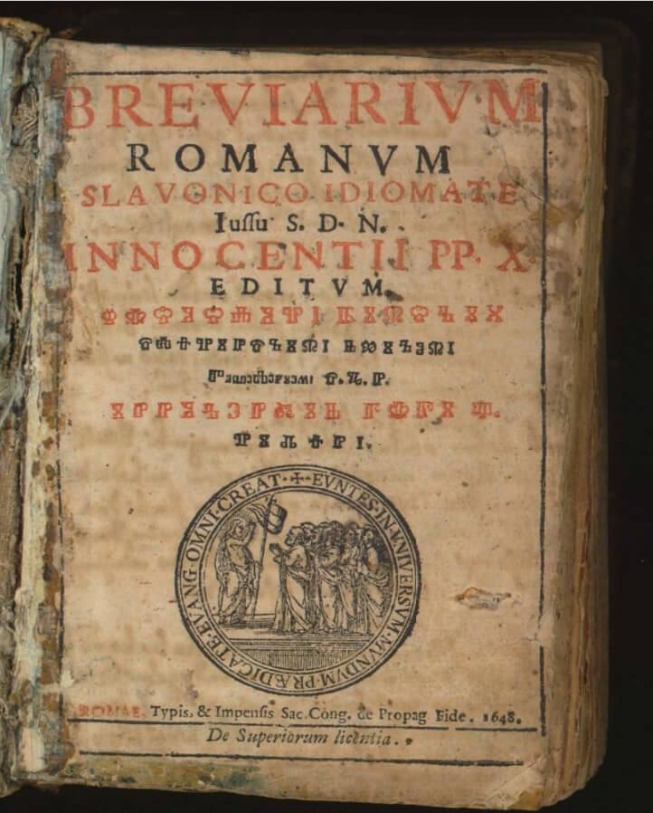
1648.
Levakovićev brevijar, službeno nazvan Časoslovь rimskii slavinskimь
êzikomь (Breviarivm Romanvm Slavonico idiomate), tiskan je 1648. godine u Rimu pod
pokroviteljstvom Kongregacije za širenje vjere (Propaganda Fide). Priredio ga je franjevac Rafael Levaković
uz pomoć unijatskog biskupa Metodija Terleckog.
Tekst je tiskan glagoljicom, ali jezik pokazuje snažan
utjecaj istočnoslavenskih elemenata, što je izazvalo kritike zbog odstupanja od tradicionalne hrvatske
glagoljaške jezične norme.
Brevijar predstavlja važan pokušaj liturgijske i jezične reforme te svjedoči o naporima Katoličke crkve u
17. stoljeću da prilagodi bogoslužje lokalnim jezicima

1688.
Paštrićev brevijar iz 1688. godine, službeno nazvan Časoslovь rimskij slavinskimь ezikomь. Brevijar sadrži molitve i čitanja za dnevne liturgijske časove, usklađene s rimskim obredom prema reformama Tridentskog sabora. Paštrić je prilikom priređivanja koristio prethodna izdanja, posebno Levakovićevo, ali je također unio ispravke i preveo nove oficije, nastojeći prilagoditi sadržaj suvremenim liturgijskim zahtjevima.
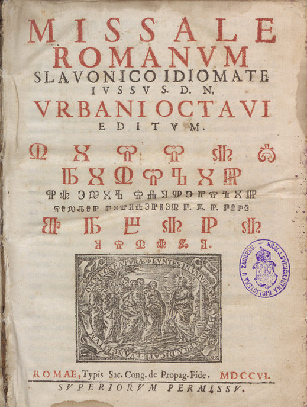
1706.
Paštrićev misal iz 1706. godine, službeno nazvan Missal rimskiĵ va ezik slovenskiĵ sazdan povoleniem P.G.N. pape Urbana Osmago, predstavlja dopunjeno izdanje Levakovićeva misala iz 1631. godine. Iako je zadržao osnovnu strukturu prethodnog izdanja, Paštrić je unio određene jezične promjene, uključujući i elemente istočnoslavenskih jezičnih osobina.
1741.
Karmanov misal (Missal rimskiĵ) iz 1741. godine predstavlja posljednje izdanje rimskog misala na glagoljici koje je objavila Kongregacija za širenje vjere u Rimu. Izdanje je priredio Matej Karaman, tadašnji svećenik i kasniji zadarski nadbiskup.
1791.
Karamanov brevijar iz 1791.,Breviarium Romanum slavonico idiomate iussu SS. D. N. Papae Pii Sexti editum (Časoslov rimski slavenskim jezikom, izdan po naredbi pape Pija VI). Iako formalno odobren i vrlo kvalitetno tiskan
(tiskala Kongregacija za širenje vjere u Rimu), nije naišao na široko prihvaćanje među hrvatskim
glagoljašima. Njegova rusifikacija jezika bila je strana osjećaju naroda i svečenika koji su težili
liturgiji na narodnom hrvatskom jeziku ili na staroj hrvatskoj redakciji staroslavenskog jezika.
Ovo je
zadnje veliko i službeno izdanje glagoljskog brevijara koje je tiskano u Rimu. Nakon ovog izdanja, došlo je do postepenog napuštanja
rusificiranog jezika u liturgijskim knjigama.
1880.
Enciklika pape Leona XIII. izdaje Veliko poslanje (Grande munus) izdana je povodom 1000. obljetnice djelovanja sv. Ćirila i Metoda. Papa veliča djelovanje svete braće te za njih uvodi blagdan u kalendar cijele katoličke crkve.
1893.
Drgutin Parčić 1893. prirerdio i objavio Misala i
Obrednika na crkvenoslavenskom jeziku hrvatske redakcije. Tom objavom je označen kraj
rusifikacije hrvatskih crkvenoslavenskih liturgijskih knjiga i povratak izvornom hrvatskom crkvenoslavenskom
jeziku.
Drugo izdanje ovog misala izdano je 1896., a treće 1905.
19. st.
Ćirilometodijana (Cyrillomethodiana) kao znanstvena disciplina u Hrvatskoj
razvila se u sklopu JAZU – Jugoslavenska akademija znanosti i umjestnosti (današnji HAZU – Hrvatska
akademija znanosti i umjetnosti), osobito zahvaljujući radu Franje Račkog i njegovih suradnika u drugoj
polovici 19. stoljeća.
Danas je Ćirilometodijana međudisciplinarno područje između povijesti, lingvistike, teologije i slavistike.
Ima vlastite međunarodne skupove i publikacije.
19. i 20. st.
Krajem 19. i početkom 20. stoljeća glagoljica postupno gubi svoju svakodnevnu funkciju. Ovaj proces bio je
uvjetovan nizom čimbenika, širenje latiničnog pisma kao dominantnog u administrativnim, obrazovnim i
vjerskim institucijama, te modernizacijske tendencije unutar Katoličke crkve. Ipak, dosta ljudi se bavi glagoljicom i glagoljaštvom kao predmetom modernog
znanstvenog istraživanja i dijela kulturne baštine.
Npr. hrvatski slavist Vatroslav Jagić proučavao je podrijetlo glagoljice (Glagoljičko pismo u Slavena – Glagoličeskoe pis’mo u Slavjan, 1911).
1902.
Temelji Staroslavenskoga instituta položeni su osnivanjem
Staroslavenske akademije 1902. Staroslavenska je akademija 1928. godine ujedinjena s
Hrvatskom bogoslovskom akademijom u Zagrebu kao njezin Staroslavenski odsjek.Pročelnikom odsjeka imenovan je
mons. dr. Svetozar Ritig (Slavonski Brod, 1873. – Zagreb, 1961.). God. 1939. mons. Ritig dao je ostavku na
pročelništvo čekajući bolja vremena. Uspio je obnoviti Staroslavensku akademiju pri Komisiji za vjerske
poslove Vlade Narodne Republike Hrvatske (NRH) kojoj je bio predsjednik.
Akademija je obnovljena 15.
rujna 1948. godine na skupštini Društva svećenika Hrvatske u Rijeci. Odlučeno je da njezino sjedište bude u
Zagrebu. Predsjednik Vlade NRH povjerio je mons. Ritigu vođenje Akademije.
1905.
Treće izdanje Parčićevog misala iz 1905. godine predstavlja posljednju liturgijsku knjigu tiskanu glagoljicom u povijesti hrvatskog glagoljaštva. Ovo izdanje objavljeno je posthumno, nakon smrti Dragutina Antuna Parčića 1902. godine, a uredio ga je češki slavist Josef Vajs. Tiskano je u Rimu, a poznato je i kao „Vajsov misal“. Ovo izdanje temelji se na Parčićevom izdanju iz 1893., ali je Vajs unio određene jezične i liturgijske korekcije kako bi se uskladilo s tadašnjim normama. Treće izdanje Parčićevog misala iz 1905. godine označava kraj tiskanja glagoljskih liturgijskih knjiga i simbolizira kraj jedne epohe u hrvatskoj liturgijskoj i kulturnoj povijesti.
1909.
Godine 1909., tijekom pontifikata pape Pija X., Tipografia Poliglotta
Propaganda Fide inkorporirana je u vatikansku tipografiju, čime su daljnje liturgijske knjige tiskane unutar
službene tiskare Svete Stolice. Ova integracija omogućila je centralizaciju tiskarskih aktivnosti i nastavak
tiskanja liturgijskih knjiga i drugih vjerskih materijala pod okriljem Vatikanove tipografije.
1927.
Vajsov misal, službenog naziva Rimski misal slověnskim jezikom prěsv. g.
Urbana papi VIII. povelěnjem izdan, nastao je 1927.kao transliteracija Parčićeva misala na latinicu. Nakon
Prvog svjetskog rata, jugoslavenski biskupi zatražili su transliteraciju Parčičevog misala na latinicu kako
bi se olakšala njegova uporaba, s obzirom na sve manju pismenost na glagoljici među svećenstvom i
vjernicima. Glagoljica se još u misalu pojavljuje na par mjesta uz latinicu kod u ordinariju mise. Misal je
priredio češki slavist mons. Josef Vajs, koji je prethodno uredio treće izdanje Parčićevog misala iz 1905.
godine.
Uporaba Vajsovog misala u liturgiji nastavila se sve do reforme Drugog vatikanskog sabora (1962.
- 1965.)
1952.
Kao predsjednik Komisije za vjerske poslove mons. Ritig predložio je
predsjedniku Vlade NRH da se naziv Staroslavenska akademija promijeni u naziv Staroslavenski
institut. Predsjednik Vlade NRH Vladimir Bakarić potpisao je 18. ožujka 1952. uredbu kojom se
osniva Staroslavenski institut sa zadatkom da skuplja, obrađuje i proučava staroslavenske i stare hrvatske
spomenike i drugo gradivo potrebno za izdavanje stručnih rječnika, monografija, zbornika i sličnih izdanja i
da ih objelodanjuje te da uz stručnu knjižnicu osnuje fototeku, u kojoj će prikupljati snimke svih važnijih
glagoljskih spomenika i ostalih spomenika koji se nalaze u knjižnicama i arhivima izvan Zagreba ili u
inozemstvu.
Staroslavenski institut posvećen je istraživanju, otkrivanju, prepoznavanju, sustavnomu
popisivanju i obrađivanju hrvatskih i staroslavenskih glagoljskih rukopisa, natpisa i tiskanih knjiga.
1980.
31. prosinca 1980. papa Ivan Pavao II. pismom Egregiae Virtutis proglasio je slavenske apostole, svetu braću Girila i Metoda suzaštitnicima Europe.
1977. do 1985.
Aleja glagoljaša spomenička je cesta smještena u Istri između gradića Roča i Huma. Duga je oko sedam do osam kilometara i sastoji se od jedanaest kamenih spomenika koji slave glagoljicu. Aleja je nastajala između 1977. i 1985. godine, a autori projekta su kipar Želimir Janeš, književnik Josip Bratulić i Zvane Črnja (idejni začetnik projekta). Svaki spomenik u aleji tematizira jedno poglavlje iz glagoljaške prošlosti – od početaka pismenosti i vjerskog prevođenja, tiskarstva, do pojedinih znamenitih glagoljaša i kulturnih događaja.
1982.
Hrvatski povjesničar umjetnosti Branko Fučić u knjizi Glagoljski natpisi (1982) okupio je, paleografski i arheološki obradio sve pronađene glagoljske natpise i grafite. Što uključuje više od 500 njih nastalih između 11. i 18. stoljeća. Više od polovice otkrio je sam, ponajviše u Istri i na Kvarneru. Među najznačajnijim su njegovim otkrićima Ročki glagoljski abecedarij, Humski grafit, Valunska ploča (čiji je natpis prvi pročitao), Grdoselski i Supetarski ulomak. Značajno je pridonio i određivanju Bašćanske ploče kao lijevoga pluteja oltarne pregrade, a njegova tekstna rekonstrukcija natpisa s te ploče danas se smatra najprihvaćenijom.
1993.
Društvo prijatelje glagoljice osnovano je 22. veljače 1993., točno na 510. obljetnicu hrvatskoga prvotiska Misal po zakonu rimskoga dvora (1483). Bavim se različitim aktivnostima vezanima za promicanje i održavanje glagoljaške baštine. Sjedište društva je pri Matici hrvatskoj, na Strossmayerovom trgu 4 u Zagrebu. Članom Društva mogu postati pojedinci, udruge, ustanove i druge pravne osobe iz zemlje i svijeta koji u cijelosti prihvaćaju pravila Društva i spremni su surađivati u njegovim djelatnostima. Imaju časopis Bašćina koji izlazi jednom godišnje.
2008.
Glagoljaško pjevanje je unikatno liturgijsko
i izvanliturgijsko pjevanje koje je proizišlo iz
pjevanih tekstova glagoljaškog bogoslužja
temeljem liturgijskih knjiga pisanih glagoljicom.
Ministarstvo kulture i medija Republike Hrvatske godine 2008. donosi rješenje kojim glagoljaško pjevanje postaje zaštićeno nematerijalno kulturno dobro Republike Hrvatske (reg. broj Z-3620).
2014.
Ministarstvo kulture u ožujku 2014. donosi rješenje da umijeće čitanja, pisanja i tiskanja glagoljice ima svojstvo nematerijalnog kulturnog dobra (reg. broj Z-6236), te se na njega primjenjuje sustav mjera zaštite.
2014.
Znanstveni centar izvrsnosti za hrvatsko glagoljaštvo utemeljen je 10. studenog 2014. godine od Ministarstva znanosti, obrazovanja i športa Republike Hrvatske. Ima za misiju i programski cilj uspostaviti i razviti interdisciplinarni teorijski okvir i model za proučavanje glagoljaških pisarskih centara. Tj. stvoriti model istraživanja koji bi kasnije mogao biti primijenjen i na ostale glagoljaške pisarske centre i rukopise za koje nije utvrđeno u kojem su skriptoriju napisani.
Centar je smješten u Staroslavenskome institutu u Zagrebu, a okuplja i stručnjake s Filozofskoga fakulteta u Zagrebu, Filozofskoga fakulteta u Rijeci, Katoličkoga bogoslovnog fakulteta u Zagrebu, Instituta za povijest umjetnosti iz Zagreba, Zavoda za povijesne i društvene znanosti HAZU-a u Rijeci te inozemne suradnike iz Instituta za slavistiku Bečkoga sveučilišta, Slavističkoga instituta Češke akademije znanosti u Pragu te Fakulteta za slavistiku Sofijskoga sveučilišta.
2014.
Knjiga Hrvatski crkvenoslavenski jezik (2014) predstavlja prvu cjelovitu gramatiku hrvatskoga crkvenoslavenskoga jezika, a rezultat je višedesetljetnoga rada sedmeročlanog autorskog tima predvođenog Milanom Mihaljevićem. Izdanje je objavljeno u suradnji Hrvatske sveučilišne naklade i Staroslavenskog instituta.
2019.
Godine 2019. Hrvatski sabor dan 22. veljače proglasio je Danom
hrvatske glagoljice i glagoljaštva.
Proglašenje tog dana inicirao je Institut za hrvatski jezik i
jezikoslovlje povodom toga što je 22. veljače spomen na dan kada je 1483. godine tiskana prva hrvatska
knjiga Misal po zakonu rimskoga dvora.
2020.
Centar za istraživanje
glagoljaštva je znanstveno-istraživački centar Sveučilišta u Zadru. Odluku o osnivanju Centra kao
ustrojbene jedinice Sveučilišta u Zadru donio je Senat Sveučilišta u Zadru na svojoj 5. Sjednici u ak. god.
2019./2020., održanoj 25. veljače 2020.
Centar koordinira znanstvena istraživanja povezana s glagoljicom,
proučava glagoljske tekstove, te se bavi kulturnim i historiografskim aspektima glagoljaštva. Aktivnosti
uključuju razvoj baza podataka, digitalizaciju građe, izdavaštvo, uvođenje glagoljaških tema u obrazovanje,
promicanje baštine kroz suvremene oblike komunikacije, uključivanje javnosti u istraživanja te organizaciju
znanstvenih skupova.
2023.
Republika Hrvatska je 1. siječnja 2023. zamijenila svoju novčanu valutu kunu eurom koji je tog dana postao
nova nacionalna valuta Hrvatske. Hrvatska je uvođenjem eura ušla u eurozonu kao 20. zemlja u kojoj je euro
službena valuta.
Na kovanici od 1, 2 i 5 centi motiv je slova HR napisanih uglatom glagoljicom. Kovanicu je
dizajnirala Maja Škripelj i dizajn sadržava godinu izdavanja i natpis HRVATSKA.